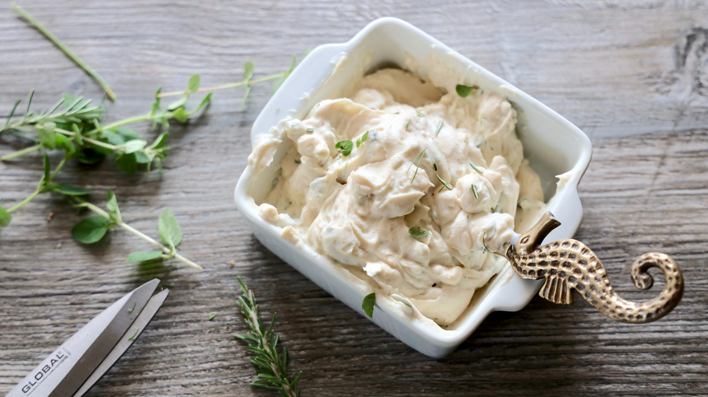
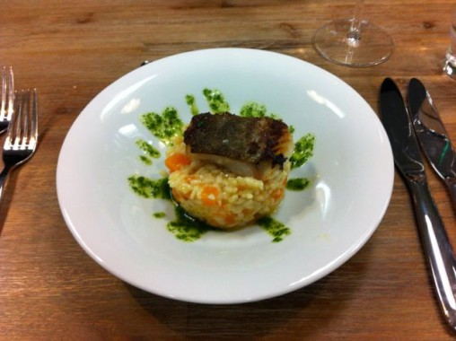
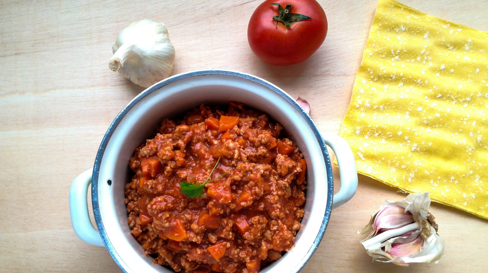
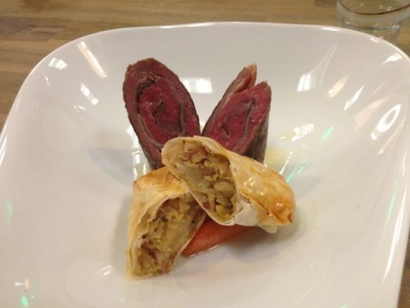
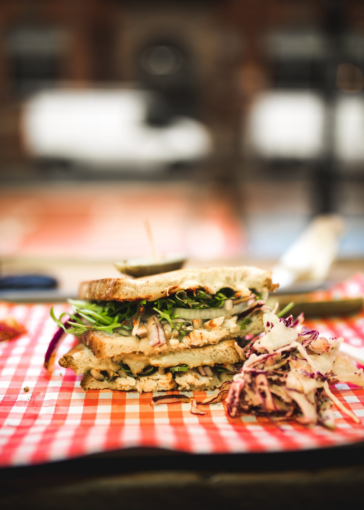
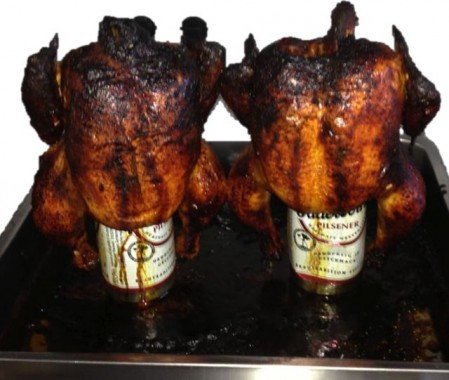

Fetacreme
Cremiger Feta-Dip mit frischen Kräutern und einem Hauch Chili — perfekt zu Brot oder als Vorspeise.

Kürbis-Chorizo-Risotto
Cremiges Risotto mit Hokkaido-Kürbis, würziger Chorizo und Parmesan — herbstlicher Klassiker.

Lasagne Bolognese
Authentische italienische Lasagne mit hausgemachter Ragù Bolognese, Béchamel und Mozzarella.

Saltimbocca vom Rind
Zartes Rindfleisch, umwickelt mit Prosciutto und Salbei, gebunden mit Zahnstochern und zart angebraten.

Selbstgemachte Baguettes
Knusprige Baguettes mit feuchtem Innenleben — die französische Klassiker selber backen.

Worcester Beef Sandwich
Gegrilltes Rindersteak mit Worcester-Sauce, roten Zwiebeln und frischen Salaten — kraftvoll und würzig.

Bierhuh
Zartes Hähnchen in einer würzigen Biersauce mit Gemüse — ein klassisches Comfort-Food Gericht.